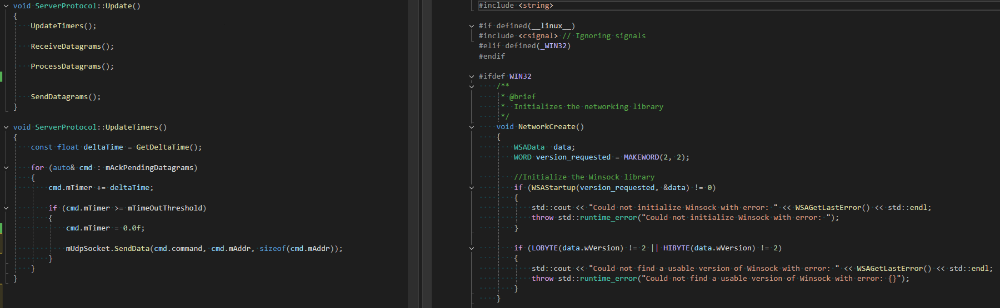

Multiplayer Asteroids Game

Project for CS260 Computer Networks class.
This course introduced hierarchical network communication in a distributed computing environment. Course topics covered network technologies, architecture, and protocols. We have specific emphasis to the TCP/IP stack and in writing portable socket based software.
Small summary of the project
Using the knowledge acquired throughout the course, we had to design and implement a multiplayer system capable of supporting up to 4 players simultaneously and with a packet loss 30% without noticeable lag. We used the UDP protocol and the Winsock library. The game was provided to us and we had to make it multiplayer. The design process, how to handle messages, their weight, and their priority, was an interesting challenge. We decided to use a client-server architecture. During the final project, we learned about various online game networking techniques, such as Lockstep, delayed input, rollback, and dead reckoning.
